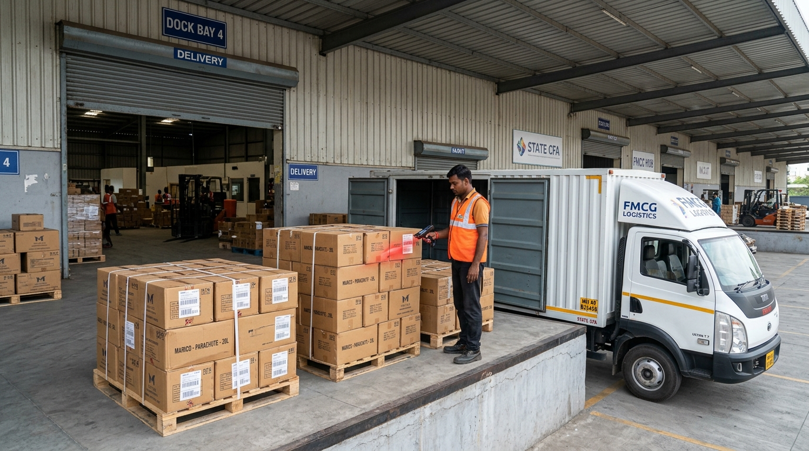

Slide 02 · Clarified TM&D Value Tree · 1-to-1 Challenge Correlation
Where Margin & Availability Leak in TM&D—And What Seals Each Gap
Every percentage benchmark maps directly to a concrete operational bottleneck across Trade Marketing & Distribution (TM&D) execution and its global On-Shelf Availability (OSA) benchmark.
TM&D Leadership North Star (Bounded to Distribution Execution)
Profitable Revenue Recovery & Capital Efficiency across ITC TM&D
Role Clarity vs. Brand Managers: Brand teams own product innovation & consumer mix. TM&D owns physical shelf availability, outlet assortment fill, trade spend realization, and cost-to-serve across ~7M outlets.
01 · TM&D Shelf Execution
On-Shelf Availability & Line Count
Eliminates kirana zero-billing & focus Stock Keeping Unit (SKU) gaps through beat-level availability execution.
02 · Trade Spend Realization
Targeted Schemes & Clean Claims
Replaces blanket trade rebates with verified window-display & distributor payout checks.
03 · Distribution Cost
Cube Fill & OTIF Penalty Defense
Protects On-Time In-Full (OTIF) across Blinkit, Zepto, DMart & primary CFA lanes.
04 · Working Capital
Distributor Cash & Field Time
Releases stock trapped at CFAs/Wholesale Dealers and hands hours back to Sales Reps.
1-to-1 Direct Correlation · Operational Root Cause → Financial Benchmark → Agent Fix
1. Kirana Out-of-Stock & SFA App Fatigue
Salesmen skip cluttered Sales Force Automation (SFA) tabs under tight evening route cutoffs, underselling hero & high-margin SKUs.
15–20%
Recoverable Kirana Out-of-Stock & LSPC leakage
Fixed by · BeatPulse & Vernacular SFA Voice
Detects Length of Sales Point Coverage (LSPC) drop, splits congested beats, & briefs reps in Hindi/regional voice.

2. CFA Rationing & Q-Comm Slot / Shelf-Life Fines
First-In-First-Out ERP dispatch starves smaller Wholesale Dealers while Quick Commerce hubs reject pallets under 75% remaining shelf life.
4–6 Days
Trapped CFA & WD working capital + OTIF chargebacks
Fixed by · Fair-Share Allocator & FleetFlow
Reserves First-Expired-First-Out (FEFO) batches for dark stores, co-loads heavy Staples with light Snacks, & shifts dock slots early.

3. Paper PODs, Display Proofs & Detention Claims
Manual photo checks for kirana window displays, damaged returns, and carrier detention slips take 2–3 weeks and invite silent overpayment.
12–15%
Scheme, display & freight accessorial claim leakage
Fixed by · Multimodal Vision & GPS Audit Agent
Reads Proof of Delivery (POD) scans, cross-checks FASTag/GPS dwell at store gates, and disputes false OTIF chargebacks automatically.

Global Industry Benchmarks · Why On-Shelf Availability Drives ITC Growth
SOURCES: NIQ BAROMETER · MCKINSEY · P&G · UNILEVER
NielsenIQ (NIQ)
5–10% Global OOS Rate
Spikes to 12–15% in promotional peaks; 30–40% of shoppers switch brands permanently when a shelf slot is empty.
McKinsey Benchmark
Up to 50% Lower Error
Machine-learning demand sensing over downstream Point-of-Sale & DMS signals cuts forecast errors & buffer stockouts sharply.
Procter & Gamble (P&G)
On-Shelf Telemetry Loop
Pairs real-time secondary sell-through with distributor inventory to trigger replenishment days before physical shelves empty.
Unilever Operations
Core-SKU Focus
Uses ML demand signals to prioritize high-velocity core packs across factories and depots, keeping hero items in stock.